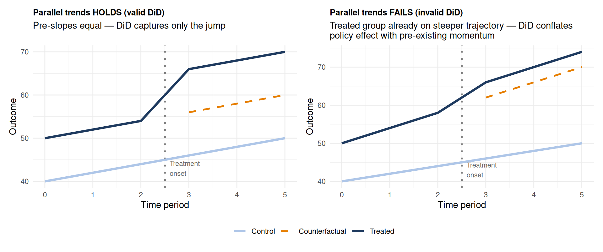
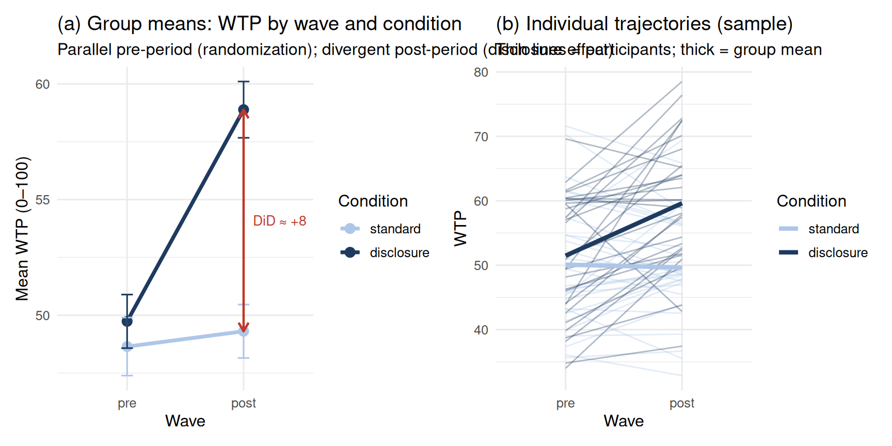

flowchart LR
A["Pre-period\n(baseline)"] --> B["Treatment onset\n(policy rollout)"]
B --> C["Post-period\n(observed)"]
B --> D["Counterfactual\n(unobserved)"]
style D fill:#fff3cd,stroke:#f39c12,stroke-dasharray:5 5
style B fill:#e8f5e9,stroke:#2d6a4f
Difference-in-Differences
Difference-in-Differences
The Core Idea
A savings nudge rolls out at some bank branches; others serve as controls. You have monthly transaction data from before and after. Can you estimate the nudge’s effect on savings behavior?
The naive approach — compare treated and control branches after the rollout — is biased if they were already different. Difference-in-Differences (DiD) subtracts the control group’s change from the treated group’s change:
\[\hat{\tau}_{DiD} = \underbrace{(\bar{Y}_{T,\text{post}} - \bar{Y}_{T,\text{pre}})}_{\text{treated group change}} - \underbrace{(\bar{Y}_{C,\text{post}} - \bar{Y}_{C,\text{pre}})}_{\text{control group change}}\]
The control group’s change serves as the counterfactual: what would have happened to treated units in the absence of the nudge?
The counterfactual timeline
The dashed box is the missing data problem. The treated group’s counterfactual post-period outcome — what they would have done without the nudge — is never observed. DiD fills that gap by assuming the control group’s trajectory is a valid proxy.
DiD appears in two distinct research contexts that share this same logic:
- Longitudinal panel data: households, consumers, or bank branches tracked across calendar time, with a policy affecting some units.
- Repeated-measures experimental data: participants randomized to treatment vs. control and measured both before and after.
Part A: Panel DiD
Setup and Simulation
We simulate a savings nudge rolled out at 40 of 80 bank branches over 6 waves (waves 1–3: pre; 4–6: post). The true nudge effect is a +10 unit increase in average monthly savings. Branches differ in their baseline savings rates and all follow a common upward time trend.
Code
n_branches <- 80
n_waves <- 6 # waves 1–3 pre; 4–6 post
branch_treat <- c(rep(1, 40), rep(0, 40))
branch_base <- rnorm(n_branches, 50, 8)
df_did <- expand_grid(branch = 1:n_branches, wave = 1:n_waves) |>
mutate(
treat = branch_treat[branch],
post = as.integer(wave > 3),
baseline = branch_base[branch],
trend = (wave - 3.5) * 1.5,
te = treat * post * 10,
avg_savings = baseline + trend + te + rnorm(n(), 0, 4)
)The Core Assumption: Parallel Trends

In the left panel, both groups rise at the same rate before treatment — the DiD estimate cleanly captures only the jump caused by the policy. In the right panel, treated units were already on a steeper trajectory. The DiD estimate would be inflated because part of the post-period gap would have materialised even without the nudge. The pre-trend test and event study distinguish these two situations.
Code
group_means <- df_did |>
group_by(wave, treat) |>
summarise(mean_sav = mean(avg_savings), .groups = "drop") |>
mutate(group = ifelse(treat == 1, "Nudge branches", "Control branches"))
ggplot(group_means, aes(x = wave, y = mean_sav, color = group, linetype = group)) +
geom_line(linewidth = 1.3) +
geom_point(size = 3) +
geom_vline(xintercept = 3.5, linetype = "dotted", color = "gray40") +
annotate("text", x = 3.6, y = max(group_means$mean_sav) - 1,
label = "Nudge rollout", hjust = 0, color = "gray40", size = 3.5) +
scale_color_manual(values = c("#aec6e8", "#1e3a5f")) +
labs(
title = "DiD: parallel pre-trends, divergence post-rollout",
subtitle = "Parallel pre-period trends support the counterfactual substitution; post-period gap = DiD estimate",
x = "Wave",
y = "Mean monthly savings (branch average)",
color = NULL, linetype = NULL
) +
theme_minimal(base_size = 13)
Regression Implementation: Two-Way Fixed Effects
The regression implementation of DiD is the Two-Way Fixed Effects (TWFE) model:
\[Y_{it} = \underbrace{\alpha_i}_{\text{branch FE}} + \underbrace{\lambda_t}_{\text{time FE}} + \underbrace{\delta \cdot D_{it}}_{\text{nudge effect}} + \varepsilon_{it}\]
Branch fixed effects \(\alpha_i\) absorb all time-invariant differences across branches (e.g., branch size, local income demographics). Time fixed effects \(\lambda_t\) absorb all common temporal trends (e.g., macroeconomic changes affecting all branches). The treatment indicator \(D_{it}\) captures the DiD estimate net of both.
In the 2×2 case (one treated group, one pre and one post period), treat:post in an OLS interaction model is algebraically identical to the DiD estimator. With multiple periods and multiple units, the TWFE formulation generalises naturally.
Code
m_did_fe <- lm(avg_savings ~ treat * post + factor(branch) + factor(wave),
data = df_did)
tidy(m_did_fe) |>
filter(term == "treat:post") |>
knitr::kable(digits = 3,
caption = "`treat:post` = DiD estimate via TWFE (true effect = 10)")| term | estimate | std.error | statistic | p.value |
|---|---|---|---|---|
| treat:post | 10.364 | 0.726 | 14.282 | 0 |
Clustered Standard Errors
In DiD with panel data, residuals within the same branch are correlated across waves — the same branch’s errors co-vary over time. Ignoring this inflates precision. Cluster at the branch level:
Code
m_did_basic <- lm(avg_savings ~ treat * post + baseline, data = df_did)
coeftest(m_did_basic, vcov = vcovCL(m_did_basic, cluster = ~branch)) |>
tidy() |>
filter(term == "treat:post") |>
knitr::kable(digits = 3,
caption = "DiD with cluster-robust SEs (clustered by branch)")| term | estimate | std.error | statistic | p.value |
|---|---|---|---|---|
| treat:post | 10.364 | 0.68 | 15.236 | 0 |
Pre-Trend Test
Code
m_pre <- lm(avg_savings ~ treat * factor(wave) + baseline,
data = df_did |> filter(post == 0))
tidy(m_pre) |>
filter(str_detect(term, "treat:")) |>
knitr::kable(digits = 3,
caption = "Pre-period treat × wave interactions — should be near zero if parallel trends holds")| term | estimate | std.error | statistic | p.value |
|---|---|---|---|---|
| treat:factor(wave)2 | 1.157 | 1.207 | 0.959 | 0.339 |
| treat:factor(wave)3 | -1.842 | 1.207 | -1.526 | 0.128 |
Event Study Plot
An event study estimates a separate treatment effect for each period, omitting one reference pre-period. Pre-period coefficients near zero confirm parallel trends; post-period coefficients trace the dynamic effect of the nudge.
Code
m_ev <- lm(avg_savings ~ treat * factor(wave) + baseline, data = df_did)
ev_df <- tidy(m_ev, conf.int = TRUE) |>
filter(str_detect(term, "treat:factor")) |>
mutate(
wave = as.integer(str_extract(term, "[0-9]+")),
pre = wave <= 3
)
ggplot(ev_df, aes(x = wave, y = estimate, color = pre)) +
geom_hline(yintercept = 0, linetype = "dashed", color = "gray60") +
geom_vline(xintercept = 3.5, linetype = "dotted", color = "gray40") +
geom_errorbar(aes(ymin = conf.low, ymax = conf.high), width = 0.2) +
geom_point(size = 3) +
scale_color_manual(
values = c("TRUE" = "#aec6e8", "FALSE" = "#1e3a5f"),
labels = c("TRUE" = "Pre-treatment (should ≈ 0)",
"FALSE" = "Post-treatment (nudge effect)")
) +
labs(
title = "Event study: pre-period near zero, post-period shows nudge effect",
subtitle = "Pre-period balance confirms parallel trends; post-period estimates trace effect trajectory",
x = "Wave",
y = "Estimated treatment effect (vs. wave 1 reference)",
color = NULL
) +
theme_minimal(base_size = 13)
A Note on Staggered Adoption
When different branches (or households) adopt treatment at different calendar times, the standard TWFE estimator produces a weighted average of all pairwise DiD comparisons — including “forbidden comparisons” where already-treated units serve as controls for later-treated units. If nudge effects are heterogeneous across cohorts or build up over time, this weighting can produce a biased and even sign-reversed estimate.
Part B: Experimental DiD
DiD Logic in Pre-Post Controlled Experiments
DiD logic appears directly in experimental designs when you have both a between-subjects factor (treatment vs. control) and a within-subjects time factor (baseline vs. follow-up). This is the standard pre-post controlled experiment — and it is structurally a DiD.
\[\hat{\tau}_{DiD} = \underbrace{(\bar{Y}_{T,\text{post}} - \bar{Y}_{T,\text{pre}})}_{\text{treatment group change}} - \underbrace{(\bar{Y}_{C,\text{post}} - \bar{Y}_{C,\text{pre}})}_{\text{control group change}}\]
In a randomized experiment, pre-test differences are zero in expectation. Random assignment supports parallel trends. The DiD estimate is therefore an unbiased ATE.
Adding the pre-test makes the estimate more efficient than a post-only comparison: the participant random intercept absorbs baseline heterogeneity, reducing residual variance. This matters most in smaller samples where chance baseline imbalance is nontrivial.
The Experimental DiD as a Mixed Model
Pre-post data are nested: measurements within participants within conditions. The correct model includes a random intercept for participant:
\[Y_{ij} = \gamma_{00} + \gamma_{10} \cdot \text{time}_{ij} + \gamma_{01} \cdot \text{cond}_j + \underbrace{\gamma_{11} \cdot \text{time}_{ij} \times \text{cond}_j}_{\text{DiD estimate}} + u_{0j} + \varepsilon_{ij}\]
The random effect \(u_{0j}\) absorbs between-person variance in the outcome level, just as unit fixed effects do in the panel TWFE model. Both absorb stable individual heterogeneity; the DiD interaction identifies the treatment effect net of that heterogeneity.
Worked Example: Savings Disclosure Intervention
120 participants (60 disclosure, 60 standard) are measured at baseline and at an 8-week follow-up. The outcome is wtp (willingness to invest in a recommended product, 0–100 scale). The disclosure condition receives an expected-value breakdown of investment options; the standard condition receives the usual product description. The true DiD effect is +8: disclosure increases WTP 8 points more than the standard condition.
Code
n_per <- 60
df_disc <- tibble(
participant = rep(1:(n_per * 2), each = 2),
condition = rep(c("standard", "disclosure"), each = n_per * 2),
wave = rep(c("pre", "post"), times = n_per * 2),
u0 = rep(rnorm(n_per * 2, 0, 8), each = 2)
) |>
mutate(
time_num = as.integer(wave == "post"),
treat_num = as.integer(condition == "disclosure"),
wtp = 50 + u0 + 1 * time_num + 8 * time_num * treat_num + rnorm(n(), 0, 5),
participant = factor(participant),
wave = factor(wave, levels = c("pre", "post")),
condition = factor(condition, levels = c("standard", "disclosure"))
)Code
m_exp_did <- lmer(wtp ~ wave * condition + (1 | participant),
data = df_disc)
tidy(m_exp_did, effects = "fixed") |>
knitr::kable(digits = 3,
caption = "`wavepost:conditiondisclosure` = DiD estimate (true = +8)")| effect | term | estimate | std.error | statistic | df | p.value |
|---|---|---|---|---|---|---|
| fixed | (Intercept) | 48.644 | 1.197 | 40.646 | 156.625 | 0.000 |
| fixed | wavepost | 0.662 | 0.908 | 0.729 | 118.000 | 0.468 |
| fixed | conditiondisclosure | 1.091 | 1.693 | 0.645 | 156.625 | 0.520 |
| fixed | wavepost:conditiondisclosure | 8.488 | 1.285 | 6.607 | 118.000 | 0.000 |
Code
group_means_exp <- df_disc |>
group_by(wave, condition) |>
summarise(mean_wtp = mean(wtp), se = sd(wtp) / sqrt(n()), .groups = "drop")
p_means <- ggplot(group_means_exp,
aes(x = wave, y = mean_wtp, color = condition, group = condition)) +
geom_line(linewidth = 1.3) +
geom_point(size = 3) +
geom_errorbar(aes(ymin = mean_wtp - se, ymax = mean_wtp + se), width = 0.1) +
annotate("segment",
x = 2, xend = 2,
y = group_means_exp$mean_wtp[group_means_exp$wave == "post" &
group_means_exp$condition == "standard"],
yend = group_means_exp$mean_wtp[group_means_exp$wave == "post" &
group_means_exp$condition == "disclosure"],
arrow = arrow(ends = "both", length = unit(0.1, "inches")),
color = "#c0392b", linewidth = 0.8) +
annotate("text", x = 2.08,
y = mean(c(
group_means_exp$mean_wtp[group_means_exp$wave == "post" &
group_means_exp$condition == "standard"],
group_means_exp$mean_wtp[group_means_exp$wave == "post" &
group_means_exp$condition == "disclosure"]
)),
label = "DiD ≈ +8", hjust = 0, color = "#c0392b", size = 3.5) +
scale_color_manual(values = c("standard" = "#aec6e8", "disclosure" = "#1e3a5f")) +
labs(
title = "(a) Group means: WTP by wave and condition",
subtitle = "Parallel pre-period (randomization); divergent post-period (disclosure effect)",
x = "Wave", y = "Mean WTP (0–100)", color = "Condition"
) +
theme_minimal(base_size = 12)
set.seed(42)
sampled_ids <- df_disc |>
distinct(participant, condition) |>
group_by(condition) |>
slice_sample(n = 30) |>
pull(participant)
p_indiv <- df_disc |>
filter(participant %in% sampled_ids) |>
ggplot(aes(x = wave, y = wtp, group = participant, color = condition)) +
geom_line(alpha = 0.35, linewidth = 0.5) +
stat_summary(aes(group = condition), fun = mean,
geom = "line", linewidth = 1.5) +
scale_color_manual(values = c("standard" = "#aec6e8", "disclosure" = "#1e3a5f")) +
labs(
title = "(b) Individual trajectories (sample)",
subtitle = "Thin lines = participants; thick = group mean",
x = "Wave", y = "WTP", color = "Condition"
) +
theme_minimal(base_size = 12)
p_means + p_indiv
Comparing Estimation Strategies
Code
m_post_only <- lm(wtp ~ condition,
data = df_disc |> filter(wave == "post"))
df_wide <- df_disc |>
select(participant, condition, wave, wtp) |>
pivot_wider(names_from = wave, values_from = wtp) |>
rename(wtp_pre = pre, wtp_post = post)
m_ancova <- lm(wtp_post ~ condition + wtp_pre, data = df_wide)
bind_rows(
tidy(m_post_only) |> filter(term == "conditiondisclosure") |>
mutate(model = "Post-only"),
tidy(m_ancova) |> filter(term == "conditiondisclosure") |>
mutate(model = "ANCOVA"),
tidy(m_exp_did, effects = "fixed") |>
filter(str_detect(term, "wave.*condition|condition.*wave")) |>
mutate(model = "Mixed DiD")
) |>
select(model, estimate, std.error, p.value) |>
knitr::kable(digits = 3,
caption = "Estimation strategies for pre-post experimental data (true effect = +8). ANCOVA and Mixed DiD converge; post-only is unbiased but wider.")| model | estimate | std.error | p.value |
|---|---|---|---|
| Post-only | 9.579 | 1.678 | 0 |
| ANCOVA | 8.816 | 1.185 | 0 |
| Mixed DiD | 8.488 | 1.285 | 0 |
Experimental Event Study: Multiple Waves
With three or more measurement waves, you can estimate separate wave-specific effects — the experimental analog of the panel event study. Pre-intervention coefficients should be near zero (confirming randomization succeeded); post-intervention estimates trace the trajectory of the effect and whether it persists or fades.
Code
df_long <- tibble(
participant = rep(1:(n_per * 2), each = 4),
condition = rep(c("standard", "disclosure"), each = n_per * 2 * 2),
wave = rep(c("pre", "mid", "post", "followup"), times = n_per * 2),
u0 = rep(rnorm(n_per * 2, 0, 8), each = 4)
) |>
mutate(
wave_num = case_when(wave == "pre" ~ 0, wave == "mid" ~ 1,
wave == "post" ~ 2, wave == "followup" ~ 3),
treat_num = as.integer(condition == "disclosure"),
true_did = case_when(wave == "pre" ~ 0, wave == "mid" ~ 4,
wave == "post" ~ 8, wave == "followup" ~ 5),
wtp = 50 + u0 + 1 * wave_num + true_did * treat_num + rnorm(n(), 0, 5),
wave = factor(wave, levels = c("pre", "mid", "post", "followup")),
participant = factor(participant),
condition = factor(condition, levels = c("standard", "disclosure"))
)
m_ev_exp <- lmer(wtp ~ wave * condition + (1 | participant), data = df_long)
ev_exp <- tidy(m_ev_exp, effects = "fixed", conf.int = TRUE) |>
filter(str_detect(term, "wave.*condition")) |>
mutate(
wave = str_extract(term, "mid|post|followup"),
wave = factor(wave, levels = c("mid", "post", "followup"))
)
ggplot(ev_exp, aes(x = wave, y = estimate)) +
geom_hline(yintercept = 0, linetype = "dashed", color = "gray60") +
geom_errorbar(aes(ymin = conf.low, ymax = conf.high), width = 0.2, color = "#1e3a5f") +
geom_point(size = 3, color = "#1e3a5f") +
labs(
title = "Experimental event study: disclosure effect at each post-wave",
subtitle = "Pre-period reference = 0 by construction; wave 'pre' is the omitted category",
x = "Wave (relative to pre-period)",
y = "DiD estimate (differential change vs. pre)"
) +
theme_minimal(base_size = 13)
The effect builds from mid-intervention, peaks at post, and partially fades at follow-up — consistent with an information effect that decays without reinforcement. This trajectory cannot be detected with a simple two-wave pre-post design.
Reviewer Challenge
TipWhat a Reviewer Would Ask
Challenge 1: “How do you know the branches would have followed parallel trends without the nudge?” The parallel trends assumption is untestable for the post-period — you never observe the treated group’s counterfactual. The pre-period test (event study coefficients near zero before treatment) provides necessary but not sufficient evidence. A reviewer will want to know whether the rollout was random or selective, and whether treated and control branches look systematically different in observable characteristics.
Challenge 2: “Aren’t you using already-treated branches as controls for later-treated branches in your staggered TWFE?” Yes, in a staggered adoption setting. This is the Callaway–Sant’Anna critique: with staggered timing and heterogeneous effects, the TWFE weights can be negative for some (g,t) cells, potentially sign-reversing the estimate. If your rollout was staggered, use cohort-time estimators and present the event study disaggregated by cohort.
Challenge 3: “Your experimental DiD treats missing-at-random dropout as acceptable — but what if high-WTP participants in the standard condition dropped out because they found the baseline session discouraging?” Differential dropout by the outcome of interest is MNAR, not MAR. The DiD estimate from completers would be biased. Sensitivity analysis comparing the completer estimate to an IPW-weighted estimate (and reporting the two together) is the appropriate response.